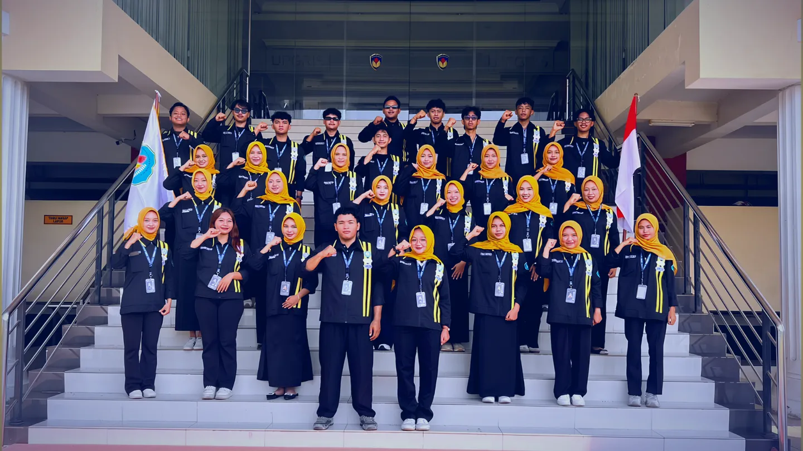

Universitas PGRI Semarang
HIMA Manajemen
Kabinet Cakra Samudra. Organisasi yang bergerak aktif, terbuka, dan terus belajar bersama mahasiswa Program Studi Manajemen.
Pengurus Kabinet Cakra Samudra
Keluarga besar HIMA Manajemen UPGRIS periode 2025/2026.

Jelajahi website
Pilih halaman untuk mengenal HIMA Manajemen lebih dekat.